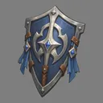
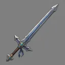

Bestiário
Fogo-Fátuo Azul
nível 16 · comum · Espírito · Pequeno · elemento Crepúsculo

- Temperamento: agressivo · chama os parentes
- Comportamento: RANGED, papel de suporte
- Elemento: Crepúsculo
- Raça e tamanho: Espírito, Pequeno
Resistências e fraquezas
- Fraco a: Cristal ×1,5, Alvorada ×1,5
- Resiste a: Crepúsculo ×0,5
- Ataca com: Neutro
Habilidades
- Cura-Fogo: Área: heal_ally; aviso de 1.0 s; gatilho ally_hp_below; recarga 8.0 s
Onde aparece em Ermândia
Os nomes levam ao mapa-múndi. Densidade só onde há contagem de spawn em dados.
- Ruínas Azuladas
- Subsolo Azulado
Drops
Chance por abate. Cada item leva à sua ficha.
- Brasa de Fogo-Fátuo85% · 1–2 un.
- Carta do Fogo-Fátuo Azul0,01% · 1–1 un.
- Poção de Vida Média6% · 1–2 un.
- Poção de Mana Média4% · 1–2 un.
- Poção de Estamina Média3% · 1–2 un.
- Essência de Crepúsculo4% · 1–1 un.

Escudo de Aço2,6667% · 1–1 un.- Traje de Aço2,6667% · 1–1 un.

Espada de Aço2,6667% · 1–1 un.- Equipamento aleatório8% de chance
Visual
Silhueta: chama em gota invertida com cauda longa, uma "mão" de chama erguida. Traços: olho único dourado com pupila horizontal de bode (F5); boca torta sob o olho, que só aparece quando conjura (F4); a mão de chama tem seis dedos (F7); a borda é ciano, mas o núcleo é violeta-escuro (regra do Crepúsculo, centro mais escuro; ver P-04). Materiais: fogo frio, fumaça, faíscas. Paleta: ciano #8FE3FF · violeta-escuro #5A3A9A · ouro do olho #E2B84A. Expressão: curiosa e cruel. Inspiração: o fogo-fátuo que atrai viajantes para o pântano.
Fonte: design/bestiary/bestiary-01-45.md e data/json/enemies